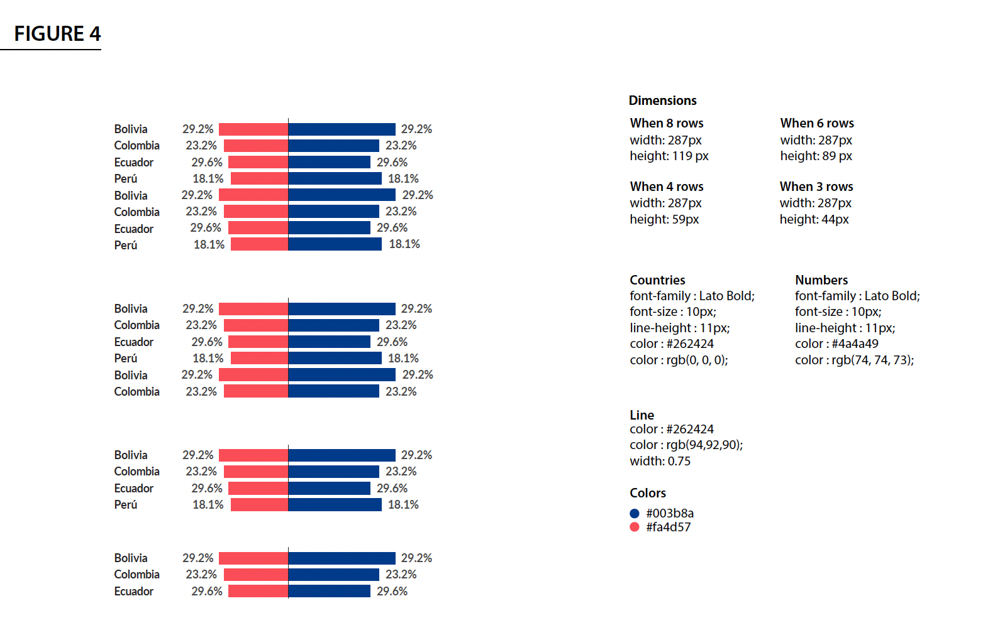

# Defining a ggplot WJP theme
WJP_theme <- function() {
theme(panel.background = element_blank(),
plot.background = element_blank(),
panel.grid.major = element_line(size = 0.25,
colour = "#5e5c5a",
linetype = "dashed"),
panel.grid.minor = element_blank(),
axis.title.y = element_text(family = "Lato Full",
face = "plain",
size = 3.514598*.pt,
color = "#524F4C",
margin = margin(0, 10, 0, 0)),
axis.title.x = element_text(family = "Lato Full",
face = "plain",
size = 3.514598*.pt,
color = "#524F4C",
margin = margin(10, 0, 0, 0)),
axis.text.y = element_text(family = "Lato Full",
face = "plain",
size = 3.514598*.pt,
color = "#524F4C"),
axis.text.x = element_text(family = "Lato Full",
face = "plain",
size = 3.514598*.pt,
color = "#524F4C"),
axis.ticks = element_blank(),
plot.margin = unit(c(0, 0, 0, 0), "points")
)
}3 Visualization Aesthetics
In this chapter, we will briefly explain the different resources you have available and that you should make use of when working of visualizations as a member of the DAU.
3.1 WJP Style Manuals
The WJP Brand Standard Manual, covers two major areas. First, the Design Style Guide which cover issues such as Color Palette, Fonts and Layout. However, these issues are more related to the work that is generally performed by the communications and design team. The second area is the Data Viz Style Guide and it covers issues such as the color palettes, fonts and layouts that should be used in WJP’s charts and tables.
The Data Viz Style Guide is complemented by the Color Palette Manual. This document extends on the use and context of the different color palettes available for WJP.
The application of these issues is mandatory when working with data visualizations related to the Rule of Law Index but they should be considered only as guidelines when working on other projects such as the Country Reports or the EU Sub-national.
The specifications of the plots to be published are defined by the communications and design team and are to be implemented by the DAU. The design team will assemble a set of specifications that you should follow and incorporate in your charts and tables. See the following example from the 2022 Country Reports in Latin America and the Caribbean:

3.2 Predefined ggplot themes
In order to achieve the desired plot that fits the specifications sent by the design team, we will have to manually set the colors, the font family, the font sizes, among other many items. To avoid doing this repeatedly for every chart in a project, it is common to set up a predefined ggplot theme for a given project. This predefined theme will not suit every single chart of the project but it should -ideally- minimize the use of the theme() function to set up the desired specifications.
As a rule, the ggplot theme to be used in each project is defined in the settings.R file. To do this, you first define the ggplot theme as follow:
Once that you have your theme predefined, you can simply add the newly created WJP_theme() function to your ggplot. Take the following example as a guide:
# Plot function
chart <- ggplot(data,
aes(x = grp,
y = perc,
label = labels,
fill = column)) +
geom_bar(stat = "identity",
color = "white",
show.legend = F,
position = "dodge") + #aes(alpha = highlighted)) +
labs(y = "% of respondents",
x = "") +
scale_fill_manual(values = colors4plot) +
scale_y_continuous(limits = c(0, 100),
labels = c("0%","20%", "40%", "60%", "80%", "100%"),
breaks = c(0, 20, 40, 60, 80, 100)) +
WJP_theme() +
theme(axis.title.x = element_blank(),
axis.title.y = element_blank(),
panel.grid.major.x = element_blank(),
panel.grid.major.y = element_line(color = "#D0D1D3",
linetype = "dashed"))3.3 The visualization process
Generating a data visualization might be a complex process. From the conceptual design to the vectorial printing there are many steps involved. Let’s focus in the actual programming of the Chart in R. We can divide the visualization code in two stages:
- Data Wrangling
- Data Viz
3.3.1 Data wrangling stage
In the Data Wrangling stage, the code is focused in preparing the data for the desired visualizations. For example, filtering observations, dropping outliers, grouping observations in predefined groups, estimating certain statistics for each group, among other steps which final outcome is to give a data frame containing only the information that is necessary for the visualization.
Given the multiple ways in which the data can be transformed, it is very complex to write a code capable of foreseeing all these possibilities. It is possible to write such a function, but it can quickly turn into a complex task. Therefore, the DAU prefers to automatize this part only when there is a defined and approved outline. We do this by writing what we call Defining Functions. As a result, each project we work on have their own defining functions.
Usually, a defining function starts like this:
figure15.fn <- function() {
# Variables to plot
vars4plot = list("Trust" = c("q1a", "q1b", "q1c"),
"Corruption" = c("q2a", "q2b", "q2c"))
# Defining data frame for plot
data2plot <- data_subset.df %>%
filter(country == mainCountry) %>%
select(year, all_of(unlist(vars4plot))) %>%
mutate(
across(starts_with("Trust"),
~if_else(.x == 1 | .x == 2, 1,
if_else(!is.na(.x) & .x != 99, 0,
NA_real_))),
across(starts_with("Corruption"),
~if_else(.x == 3 | .x == 4, 1,
if_else(!is.na(.x) & .x != 99, 0,
NA_real_)))
) %>%
group_by(year) %>%
summarise(across(everything(),
mean,
na.rm = T)) %>%
pivot_longer(!year,
names_to = "category",
values_to = "value") %>%
mutate(value = value*100,
label = paste0(format(round(value, 0),
nsmall = 0),
"%")) %>%
filter(year >= 2014)
(...)
} As you can see, the main objective of a Defining Function is to target a single variable or even a set of variables and apply a cleaning routine that will deliver a data frame ready to be plotted using ggplot. We usually refer to this data frame, as data2plot. A Defining Function can continue by defining the color palette, the opacity values, and other parameters needed at the Data Visualization Stage.
3.3.2 Data visualization stage
Once that we have worked over a data2plot and the other parameters needed for visualizing the chart, we call the Plotting Function. The main objective of these functions is to receive a data frame such as the data2plot and produce a certain type of visualization with it. Therefore, you only need one Plotting Function per chart type (e.g. line, bars, radar, rose, stacked).
Unlike the Defining Functions, the Plotting Functions just need to anticipate the parameters that can vary between charts such as colors, opacities, shapes, groups, etc. Therefore it is very easy to write general functions that can be reused between projects. The DAU already have a GitHub repository containing most of these Plotting Functions which are available to be used for any project that requires similar charts. You can check an example of such function in this page.
Important: These functions are a work in progress by the DAU. Sometimes, it is necessary to add more parameters to the functions to achieve the desired results. In order to avoid the functionality of previous projects, please define these new parameters along with a default value that will refer to the previous functionality of the function. This way, we won’t have to change the code from older projects every time that we update the Plotting Functions.